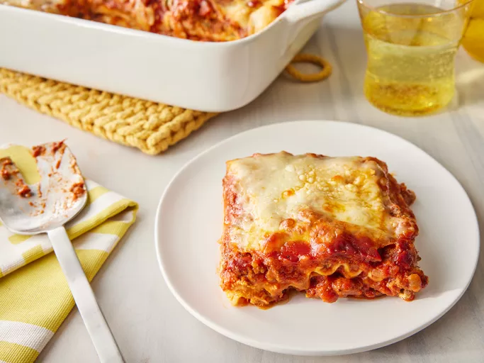

World's Best Lasagna
When John Chandler submitted this lasagna recipe to Allrecipes more than 20 years ago, he had no idea how successful it would become. One of our top-performing recipes of all time, World's Best Lasagna racks up more than 7 million views per year and has ranked among the most popular lasagna recipes on the internet for two decades. Unfortunately, John unexpectedly passed away at 53 years old — read all about his life and legacy here.
Lasagna Ingredients
- MeatThis super meaty lasagna has sweet Italian sausage and lean ground beef.
- Onion and garlicAn onion and two cloves of garlic are cooked with the meat to add tons of flavor.
- Tomato productsYou'll need a can of crushed tomatoes, two cans of tomato sauce, and two cans of tomato paste.
- SugarTwo tablespoons of white sugar add subtle sweetness and enhance the flavor of the sauce.
- Spices and seasoningsThis lasagna recipe is flavored with fresh parsley, dried basil leaves, salt, Italian seasoning, fennel seeds, and black pepper.
- Lasagna noodlesUse store-bought or homemade lasagna noodles.
- CheesesParmesan, mozzarella, and ricotta cheese make this lasagna extra decadent.
- EggAn egg helps bind the ricotta so it doesn't ooze out of the lasagna when you cut into it.
Steps
- Make the meat sauce.
- Cook the noodles.
- Make the ricotta mixture.
- Layer the lasagna according to the recipe instructions.
- Cover with foil and bake.
- Let the lasagna rest before serving.